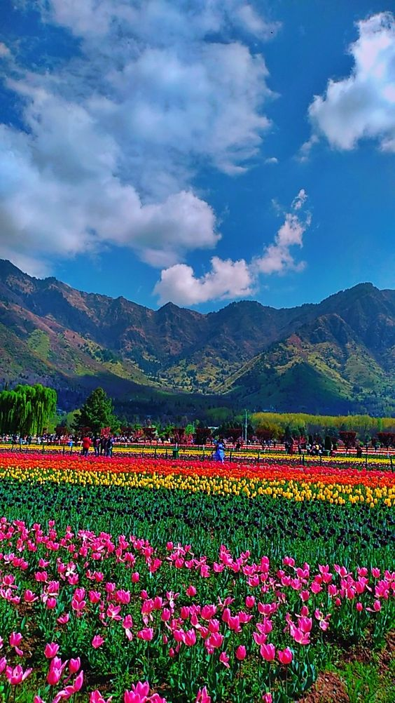
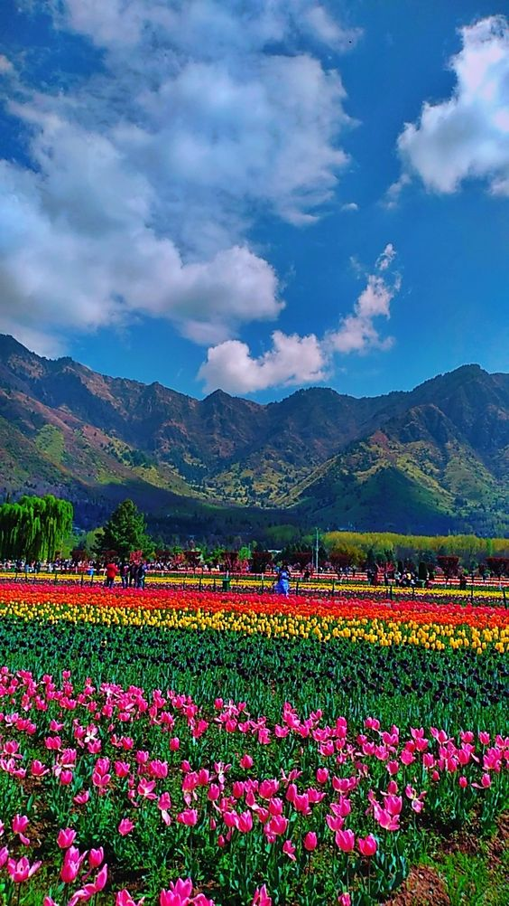

The Iconic Mughal Gardens
Shalimar Bagh
Shalimar Bagh is one of the largest Mughal gardens in Srinagar, known for its beautifully landscaped greenery, fountains, and architecture.


Nishat Bagh
Famous for its terraces and stunning view of Dal Lake, Nishat Bagh offers an exceptional experience of Mughal-era gardening.
Tulip Garden
Indira Gandhi Memorial Tulip Garden is the largest in Asia, and it blooms with thousands of tulips in different colors every spring.
 

Pari Mahal
Perched on Zabarwan mountain, Pari Mahal, meaning 'The Palace of Fairies,' offers a stunning view of Dal Lake.
Chashme Shahi
Chashme Shahi, meaning 'The Royal Spring,' is a small, yet beautiful Mughal garden with natural water springs.